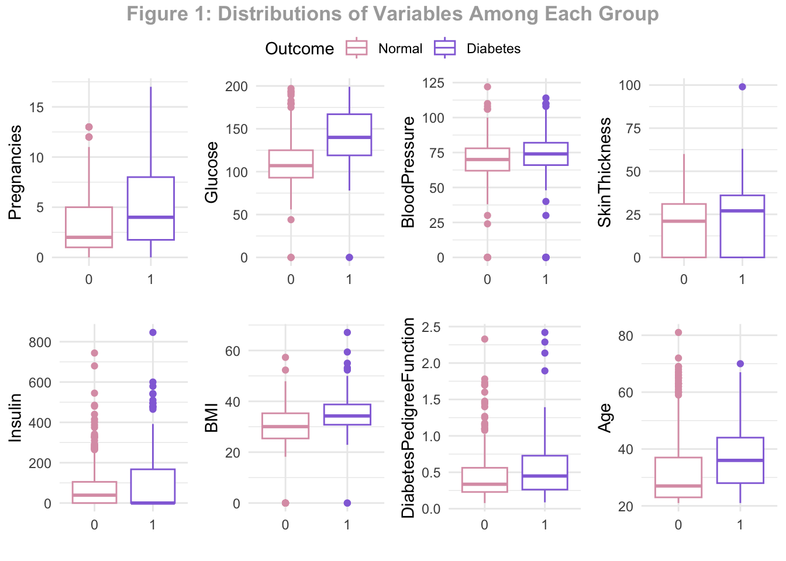
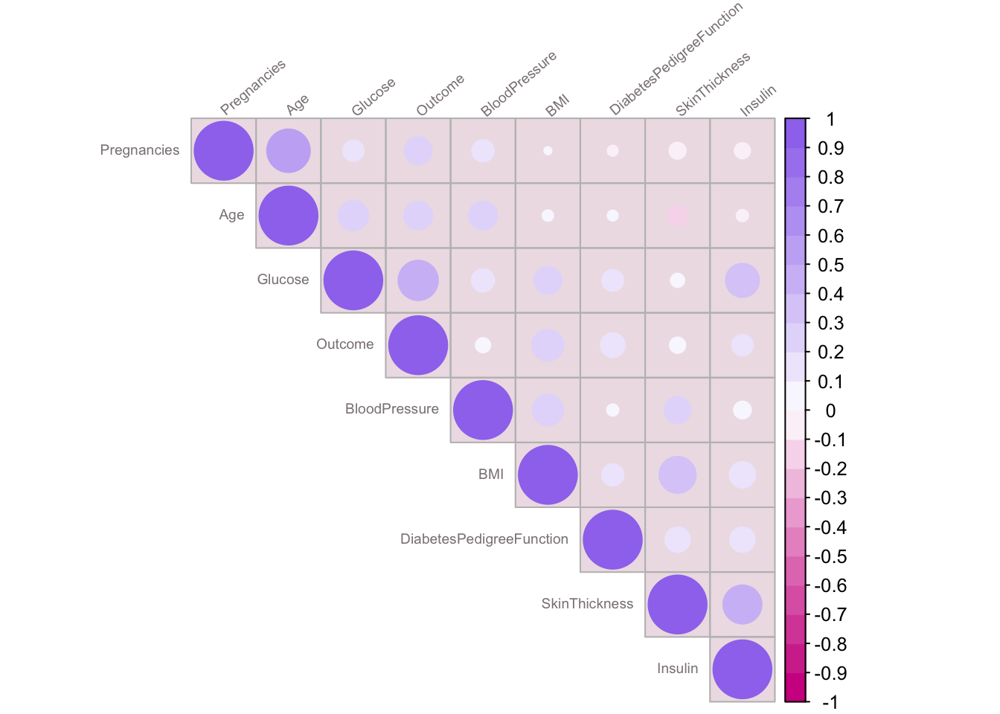
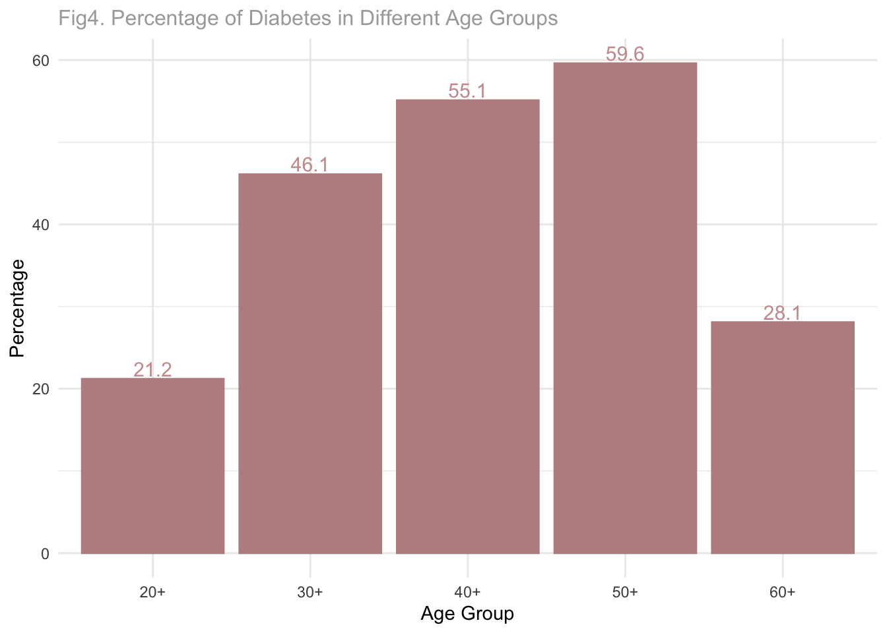
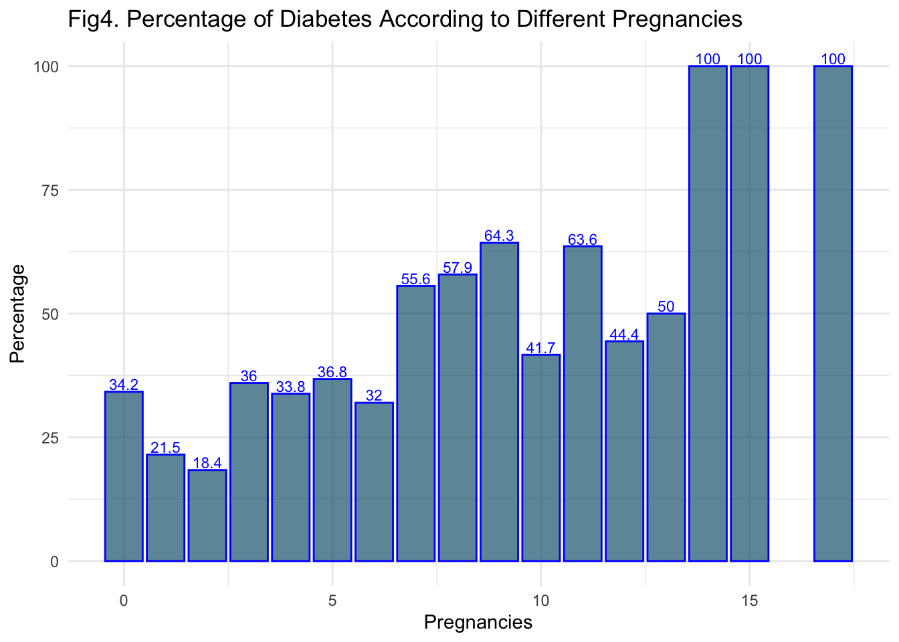

Diabetes
Data Process and Cleaning
diabetes <- read.csv("diabetes.csv")We use one dataset drawn from Kaggel which is originally from the National Institute of Diabetes and Digestive and Kidney. Our dataset includes 768 observations for 9 varibles, which are shown in table 1.
The objective of this dataset is to predict diabetes diagnostically,
based on the medical measurements in the data. This dataset contains
eight independent medical predictors which might be associated with
diabetes occurrence and one dependent variable outcome. The
data source is female patients at least 21 years old of Pima Indian
heritage..
For the step of data cleaning, we use the read.csv function to load
the raw data, reduce the outline data for all eight measurements, and
reorganize the variables name. There are no null values, so no action
was done to fill the dataset. We convert outcome to factor
data type for future analysis.
kable(head(dplyr::select(diabetes,Pregnancies,Glucose,BloodPressure,SkinThickness,Insulin, BMI,DiabetesPedigreeFunction,Age, Outcome),9),caption = "Table 1: Raw Data") %>%
kable_styling(latex_option = c("hold_position"), position = "left")| Pregnancies | Glucose | BloodPressure | SkinThickness | Insulin | BMI | DiabetesPedigreeFunction | Age | Outcome |
|---|---|---|---|---|---|---|---|---|
| 6 | 148 | 72 | 35 | 0 | 33.6 | 0.627 | 50 | 1 |
| 1 | 85 | 66 | 29 | 0 | 26.6 | 0.351 | 31 | 0 |
| 8 | 183 | 64 | 0 | 0 | 23.3 | 0.672 | 32 | 1 |
| 1 | 89 | 66 | 23 | 94 | 28.1 | 0.167 | 21 | 0 |
| 0 | 137 | 40 | 35 | 168 | 43.1 | 2.288 | 33 | 1 |
| 5 | 116 | 74 | 0 | 0 | 25.6 | 0.201 | 30 | 0 |
| 3 | 78 | 50 | 32 | 88 | 31.0 | 0.248 | 26 | 1 |
| 10 | 115 | 0 | 0 | 0 | 35.3 | 0.134 | 29 | 0 |
| 2 | 197 | 70 | 45 | 543 | 30.5 | 0.158 | 53 | 1 |
diabetes$Outcome <-factor(diabetes$Outcome)Table 2 gives the preview about each variable’s intended measurement.
variable_name <- c("Pregnancies","Glucose","BloodPressure","SkinThickness","Insulin", "BMI","DiabetesPedigreeFunction","Age", "Outcome")
description <- c("To express the Number of pregnancies","To express the Glucose level in blood","To express the Blood pressure measurement","To express the thickness of the skin","To express the Insulin level in blood","To express the Body mass index","To express the Diabetes percentage","To express the age","To express the diabetes outcome 1 is Yes and 0 is No")
variable_data <- data.frame(variable_name,description)
kable(variable_data,caption = "Table 2: Data Dictionary",col.names = c("Variable Name","Description"))%>% kable_styling(latex_option = c("hold_position"), position = "left")| Variable Name | Description |
|---|---|
| Pregnancies | To express the Number of pregnancies |
| Glucose | To express the Glucose level in blood |
| BloodPressure | To express the Blood pressure measurement |
| SkinThickness | To express the thickness of the skin |
| Insulin | To express the Insulin level in blood |
| BMI | To express the Body mass index |
| DiabetesPedigreeFunction | To express the Diabetes percentage |
| Age | To express the age |
| Outcome | To express the diabetes outcome 1 is Yes and 0 is No |
- The variable diabetes pedigree function indicates the function which scores likelihood of diabetes based on family history.
Factors Preview
We start with identifying whether the eight diagnostic measurements are related with diabetes or not. Since our outcome variable is a binary variable, the box plot were used to visualize the relationship between factors and diabetes. The y-axis was defined as the diagnostic measurement result and x-axis were grouped by female with diabetes or not. The results of all box plots are shown in Figure 1.
p1 <- ggplot(diabetes,aes(x= Outcome, y=Pregnancies,color=Outcome)) + geom_boxplot()+labs(x="")+scale_color_manual(labels = c("Normal", "Diabetes"), values = c("#DC9FB4", "mediumpurple"))+theme(axis.title.y = element_text(size=8))+
theme_minimal()
p2 <- ggplot(diabetes,aes(x= Outcome, y=Glucose,color=Outcome)) + geom_boxplot()+labs(x="")+scale_color_manual(labels = c("Normal", "Diabetes"), values = c("#DC9FB4", "mediumpurple"))+theme(axis.title.y = element_text(size=8))+
theme_minimal()
p3 <- ggplot(diabetes,aes(x= Outcome, y=BloodPressure,color=Outcome)) + geom_boxplot()+labs(x="")+scale_color_manual(labels = c("Normal", "Diabetes"), values = c("#DC9FB4", "mediumpurple"))+theme(axis.title.y = element_text(size=8))+
theme_minimal()
p4 <- ggplot(diabetes,aes(x= Outcome, y=SkinThickness,color=Outcome)) + geom_boxplot()+labs(x="")+scale_color_manual(labels = c("Normal", "Diabetes"), values = c("#DC9FB4", "mediumpurple"))+theme(axis.title.y = element_text(size=8))+
theme_minimal()
p5 <- ggplot(diabetes,aes(x= Outcome, y=Insulin,color=Outcome)) + geom_boxplot()+labs(x="")+scale_color_manual(labels = c("Normal", "Diabetes"), values = c("#DC9FB4", "mediumpurple"))+theme(axis.title.y = element_text(size=8))+
theme_minimal()
p6 <- ggplot(diabetes,aes(x= Outcome, y=BMI,color=Outcome)) + geom_boxplot()+labs(x="")+scale_color_manual(labels = c("Normal", "Diabetes"), values = c("#DC9FB4", "mediumpurple"))+theme(axis.title.y = element_text(size=8))+
theme_minimal()
p7 <- ggplot(diabetes,aes(x= Outcome, y=DiabetesPedigreeFunction,color=Outcome)) + geom_boxplot()+labs(x="")+scale_color_manual(labels = c("Normal", "Diabetes"), values = c("#DC9FB4", "mediumpurple"))+theme(axis.title.y = element_text(size=8))+
theme_minimal()
p8 <- ggplot(diabetes,aes(x= Outcome, y=Age,color=Outcome)) + geom_boxplot()+labs(x="")+scale_color_manual(labels = c("Normal", "Diabetes"), values = c("#DC9FB4", "mediumpurple"))+theme(axis.title.y = element_text(size=8))+
theme_minimal()
Results reveal that different groups of females have different medians of diagnostic results, which indicate that the factors have linear or nonlinear association with diabetes.
The below Figure 2 shows the histogram plots for each factor to visualize if these variables follow normal distribution and whether their measurement value falls in normal range .
h1 <- ggplot(diabetes, aes(x=Pregnancies)) +
geom_histogram( colour="mediumslateblue", fill="white")+labs(x="Pregnancies")
h2 <- ggplot(diabetes, aes(x=Glucose)) +
geom_histogram(colour="mediumslateblue", fill="white")+labs(x="Glucose")+
geom_vline(aes(xintercept=70),
color="blue", linetype="dashed", size=0.8)+
geom_vline(aes(xintercept=100),
color="blue", linetype="dashed", size=0.8)
h3 <- ggplot(diabetes, aes(x=BloodPressure)) +
geom_histogram(colour="mediumslateblue", fill="white")+labs(x="Blood Pressure")+
geom_vline(aes(xintercept=120),
color="blue", linetype="dashed", size=0.8)
h4 <- ggplot(diabetes, aes(x=SkinThickness)) +
geom_histogram(colour="mediumslateblue", fill="white")+
labs(x="Skin Thickness")+
geom_vline(aes(xintercept=3.4),
color="blue", linetype="dashed", size=0.8)+
geom_vline(aes(xintercept=25.2),
color="blue", linetype="dashed", size=0.8)
h5 <- ggplot(diabetes, aes(x=Insulin)) +
geom_histogram(colour="mediumslateblue", fill="white")+labs(x="Insulin")+
geom_vline(aes(xintercept=174),
color="blue", linetype="dashed", size=0.8)
h6 <- ggplot(diabetes, aes(x=BMI)) +
geom_histogram(colour="mediumslateblue", fill="white")+labs(x="BMI")+
geom_vline(aes(xintercept=18.5),
color="blue", linetype="dashed", size=0.8)+
geom_vline(aes(xintercept=30),
color="blue", linetype="dashed", size=0.8)
h7 <- ggplot(diabetes, aes(x=DiabetesPedigreeFunction)) +
geom_histogram(colour="mediumslateblue", fill="white")+labs(x="DPF")
h8 <- ggplot(diabetes, aes(x=Age)) +
geom_histogram(colour="mediumslateblue", fill="white")+labs(x="Age")h <- ggpubr::ggarrange(h1, h2,h3,h4,h5,h6,h7,h8, ncol=4,nrow = 2,common.legend = TRUE)
ggpubr::annotate_figure(h, top = ggpubr::text_grob("Figure 2: Distributions of Variables", color = "darkgrey",face = "bold", size = 13))
The dash line indicates the normal range for individual females without diabetes.
- Glucose: between 4.0 to 5.4 mmol/L(77 to 99 mg/dl) when fasting; Up to 7.8mmol/L (140 mg/dl) 2 hours after eating.
- Blood Pressure <120mm Hg
- Skin thickness: 3.40 mm to 25.20 mm in females
- BMI: 18.5-24.9
We see a large number of the observations have above normal glucose level, which is expected because our data contains 268 positive diabetes cases and pregnant females whose glucose level is usually higher. Because we plan to fit a logistic regression model on the predictors that doesn’t require a normal distribution of the variables, we don’t need to transform or remedy our data. The skewness can be neglected.
Collinearity test
Before fitting the model, the collinearity between different factors
needed to be tested. We used the corrplot function to test the
collinearity. The plot result shows that there no significant
correlation relationship between all eight variables, although the
SkinThickness variable and Insulin variable
has a light purple color which indicate they might correlated, the index
is only about 0.6 which is not significantly correlated and also we do
not include the SkinThickness variable in the final model which will be
discussed later. Thus, we can conclude that all the eight variables can
be used to fit a model and find the prediction rate of diabetes.
col <- colorRampPalette(c("violetred", "white", "mediumpurple2"))(20)
corrplot(res, type = "upper", order = "hclust",
tl.col = "lavenderblush4", tl.srt = 40,bg = "lavenderblush2",col =col,tl.cex = 0.6)
Two specific factors exploration
Since the age and pregnancy factors are most concerned. We use the bar plot to visualize the proportion of diabetes among stratified age groups and different numbers of pregnancies.
Age
“Men generally have heart disease in their 40’s and 50’s, about a decade before women. But this is generally not true for diabetic women. For diabetic women, the cardiovascular risk occurs earlier. Diabetes takes away much of the protection premenopausal women would normally get from estrogen.” —Kapur, A., & Seshiah, V. (2017)
The diabetes proportion gets higher with the increase of age variable, and the age group of 50-60 years old has the highest diabetes proportion. Generally, age factors have a positive association with diabetes proportion.
diabetes <- diabetes %>%
mutate(Agegroup = case_when(Age < 30 ~ "20+",
30 <= Age & Age < 40 ~ "30+",
40 <= Age & Age < 50 ~ "40+",
50 <= Age & Age < 60 ~ "50+",
60 <= Age ~ "60+"
))
df <- group_by(diabetes,Agegroup) %>%mutate(percent = sum(Outcome)/n())
df <- data.frame(
Agegroup=c("20+","30+","40+","50+","60+"),
Percentage= 100*c(0.212,0.461,0.551,0.596,0.281)
)
ggplot(df, aes(x=Agegroup, y=Percentage)) +
geom_bar(stat = "identity",color="rosybrown", fill="rosybrown" )+
geom_text(aes(label = round(Percentage,1)), vjust = -0.2, size = 4,
position = position_dodge(0.9),color ="rosybrown3") + ggtitle("Fig3. Percentage of Diabetes in Different Age Groups")+
theme_minimal()+labs(x="Age Group")+
theme(plot.title = element_text(color = "darkgrey",size = 12))
Pregnancy
We also examine the association between pregnancy and diabetes proportion, as it can be seen in the plot below, as the pregnancy frequency increases the diabetes proportion also increases, and when the pregnancy frequency is 17 times, diabetes proportion reaches a hundred percent.
df <- group_by(diabetes,Pregnancies) %>%mutate(percent = sum(Outcome)/n())
df <- data.frame(
Pregnancies=c(0:15,17),
Percentage= 100*c(0.342,0.215,0.184,0.36,0.338,0.368,0.32,0.556,0.579,0.643,0.417,0.636,0.444,0.5,1.0,1.0,1.0)
)
ggplot(df, aes(x=Pregnancies, y=Percentage)) +
geom_bar(stat = "identity",color="rosybrown", fill="rosybrown3")+
geom_text(aes(label = round(Percentage,1)), vjust = -0.2, size = 3,
position = position_dodge(0.9),colour = "rosybrown4") + ggtitle("Fig4. Percentage of Diabetes According to Different Pregnancies")+
theme_minimal()+
theme(plot.title = element_text(color = "darkgrey",size = 12))